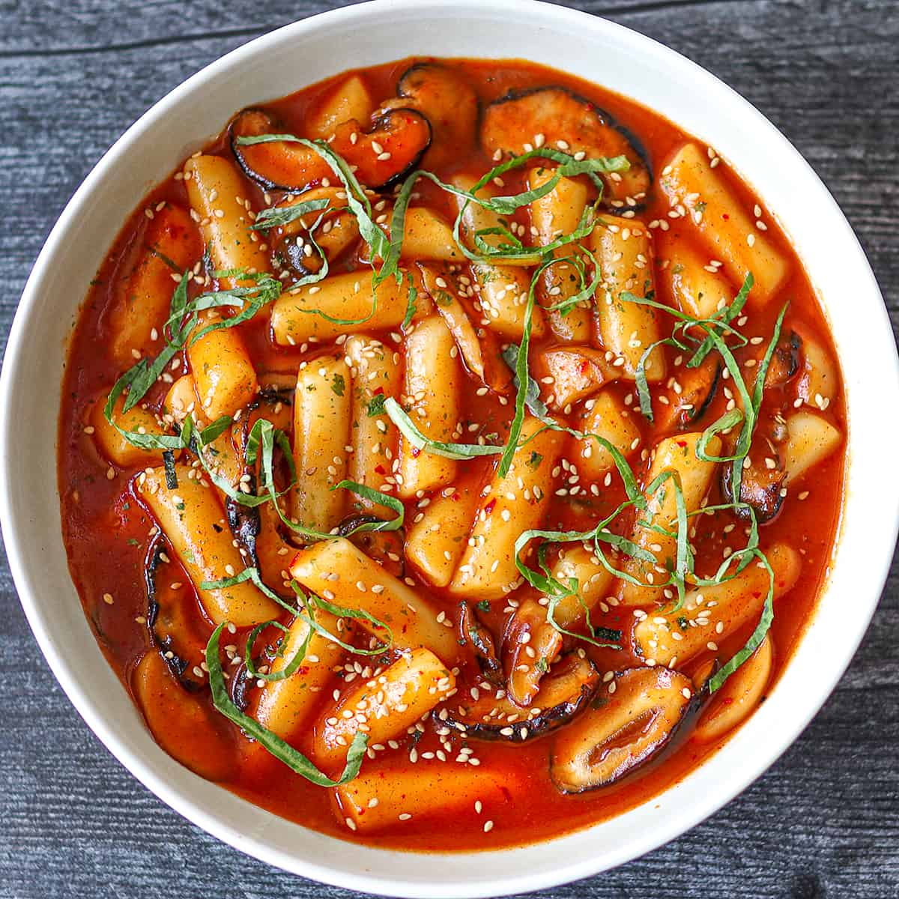

Over mij
Zuid-Korea staat als tweede op mijn lijst. Seoul is een mooie stad die mij erg aantrekt. Wat mij voornamelijk aantrekt is de sfeer, vooral in de nacht ziet Seoul er super mooi uit met die moderne gebouwen en lichtjes in de stad. Ook kijk ik af en toe kdramas, waardoor ik nog liever naar Seoul wil. Het lijkt mij geweldig om die stad te verkennen met familie of vrienden. Ook wil ik heel graag naar 7-Eleven in Seoul om daar zelf instant noodles te maken en om mijn eigen drinken te maken. Ik zag 7-Eleven vaak op TikTok voorbij komen en mensen die daar dan hun eigen eten voorbereiden, dus dat wil ik heel graag ook een keer doen!

Koreaans eten
Ik ben de laatste tijd erg dol op Koreaans eten, vooral tteokbokki. Koreaans eten is erg pittig. Ik kon vroeger namelijk die pittigheid niet aan, maar tegenwoordig vind ik het heerlijk en staat Seoul daarom in mijn top 3 steden die ik graag wil bezoeken om het eten te proberen. Ik ben ook erg dol op kip, dus ik zou heel graag de gefrituurde kip in Zuid-Korea willen proberen. Verder hou ik ook van kimchi, Korean BBQ en natuurlijk Samyang Buldak Noodles. Eten is sowieso een grote reden voor mij om een bepaald land of stad te bezoeken.
